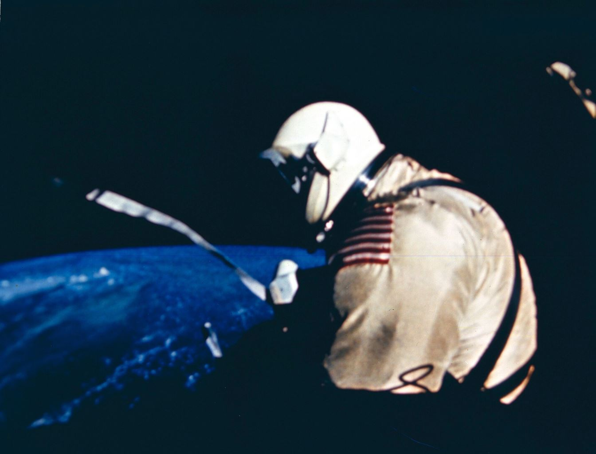
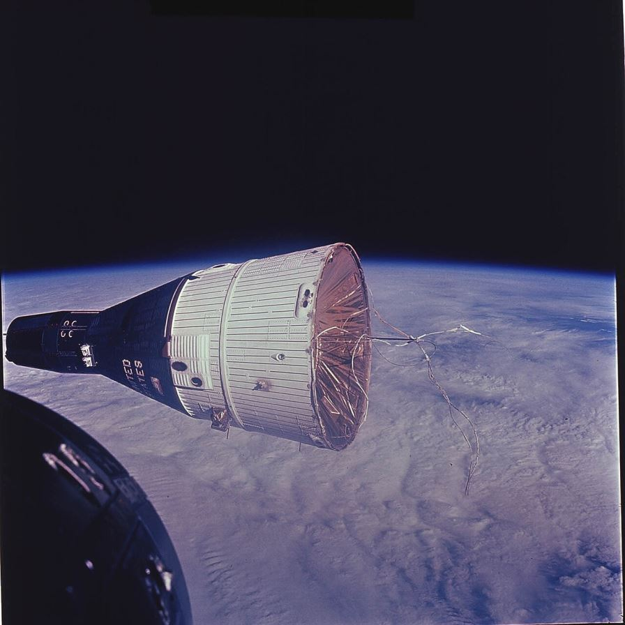
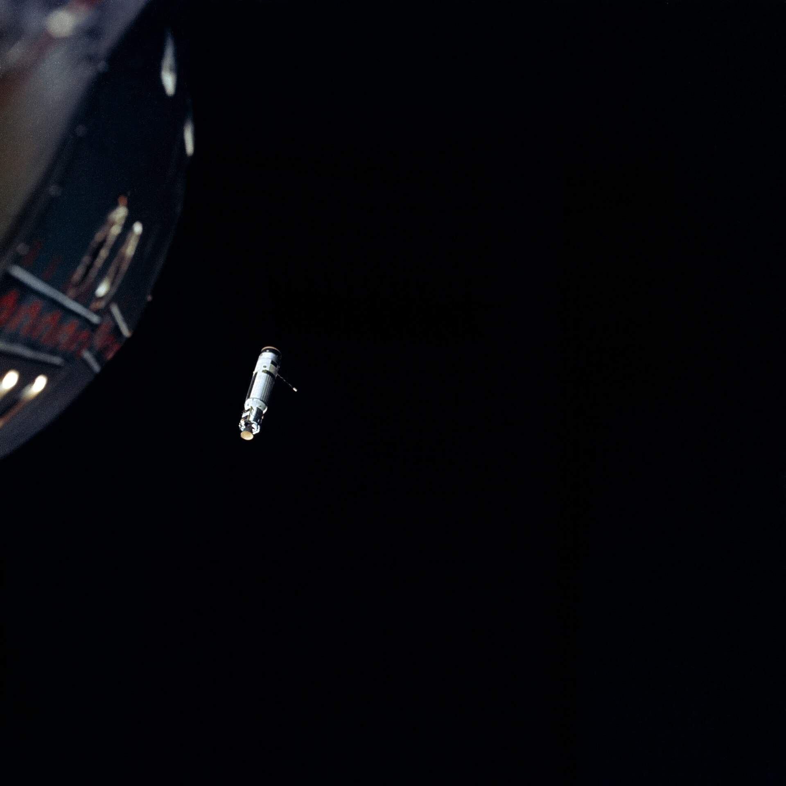

Between Mercury and Apollo sat Gemini: the bridge. Apollo needed four things nobody had ever done — rendezvous, docking, spacewalking and surviving two weeks in space. Gemini flew twelve missions from 1964 to 1966 and proved all four.
The spacecraft
Gemini was built by McDonnell, the same company behind Mercury. It weighed about 3.8 tonnes at launch and carried two astronauts in a cabin the size of the front seat of a small car. It was so tight that pilots joked you didn't get into a Gemini — you put it on.
It had no escape tower like Mercury and Apollo. Instead it had two aircraft-style ejection seats. The hatches opened outward, and the crew closed them by hand with a mechanical latch — a detail that would cause one of the program's scariest moments.

The four skills Apollo needed
Grissom and Young fly the first crewed Gemini. America now launches two astronauts at a time.
Ed White floats outside for 23 minutes on a golden tether. Asked to come back inside, he replies: "I'm coming back in... and it's the saddest moment of my life."
Borman and Lovell live in orbit for 13 days 18 hours 35 minutes — proving the human body can survive a round trip to the Moon. Their cabin was barely bigger than a phone booth.
Two crewed spacecraft meet in orbit for the first time, flying in formation as close as 30 cm. Landing on the Moon requires this skill twice per mission.
Neil Armstrong and Dave Scott dock with an unmanned Agena target — and then the mission almost ends in disaster.
Lovell and Aldrin fly the last mission. Aldrin completes three spacewalks totalling 5 hours 30 minutes — calmly, without the exhaustion earlier crews suffered. Apollo was cleared for the Moon.
The Gemini 8 emergency
After docking with the Agena, a steering thruster on Gemini 8 stuck open. The joined spacecraft began spinning faster and faster — nearing one revolution per second, enough to knock the crew unconscious. Armstrong undocked, but the spin only got worse. He shut down the main thruster system and used the small re-entry thrusters to stop the spin — using about 75% of their fuel. Mission rules demanded an immediate emergency landing, and Gemini 8 splashed down in the Pacific hours later. Armstrong's cool handling of the situation is one reason he was chosen to command Apollo 11.

The spacewalk problem — and the solution
Spacewalking turned out to be harder than anyone expected. During Gemini 9A, Gene Cernan nearly didn't make it back inside: with nothing to hold onto, every small task exhausted him, his visor fogged over, and closing the stiff hatch by hand took all his remaining strength.
NASA's fix was simple and brilliant: handholds, foot restraints, and practice. Buzz Aldrin trained for about 12 hours in a swimming pool — helping prove the "neutral buoyancy" technique still used to train every astronaut today. His Gemini 12 spacewalks went smoothly, and spacewalking became routine enough for Apollo.

The missions that almost broke the program
Gemini's successes are famous; its near-misses deserve to be. Gemini 5 flew with a malfunctioning fuel cell and completed its eight days on reduced power — the first real test of flying a sick spacecraft. Gemini 9A launched toward a docking target whose protective shroud had failed to open, leaving the Agena's docking collar wrapped in its own fairing — the crew named it the angry alligator. And of course Gemini 8 nearly spun its crew unconscious. Every one of these failures taught NASA something Apollo needed to know: how to survive a malfunction, how to improvise, how to come home early and alive.
Gemini in numbers
All ten crewed missions
| Mission | Dates | Length (launch to splashdown) | What it proved |
|---|---|---|---|
| Gemini 3 | 23 Mar 1965 | ≈5 hours | First crewed Gemini |
| Gemini 4 | 3–7 Jun 1965 | ≈4 days | First US spacewalk (White, 23 min) |
| Gemini 5 | 21–29 Aug 1965 | ≈8 days | First week-long mission |
| Gemini 7 | 4–18 Dec 1965 | 13 d 18 h 35 min | Two-week endurance; rendezvous target for 6A |
| Gemini 6A | 15–16 Dec 1965 | ≈1 day | First crewed rendezvous (with Gemini 7) |
| Gemini 8 | 16–17 Mar 1966 | ≈10 hours | First docking — and first in-flight emergency |
| Gemini 9A | 3–6 Jun 1966 | ≈3 days | Spacewalk problems (Cernan's exhausting EVA) |
| Gemini 10 | 18–21 Jul 1966 | ≈3 days | Double rendezvous, docking practice |
| Gemini 11 | 12–15 Sep 1966 | ≈3 days | Record altitude: 1,369 km |
| Gemini 12 | 11–15 Nov 1966 | ≈4 days | Spacewalk problem solved (Aldrin's EVAs) |
How long each mission flew
Everything Gemini learned was used once — on Apollo 11. Meanwhile, the other side of the race had its own story: the Russians and their projects.